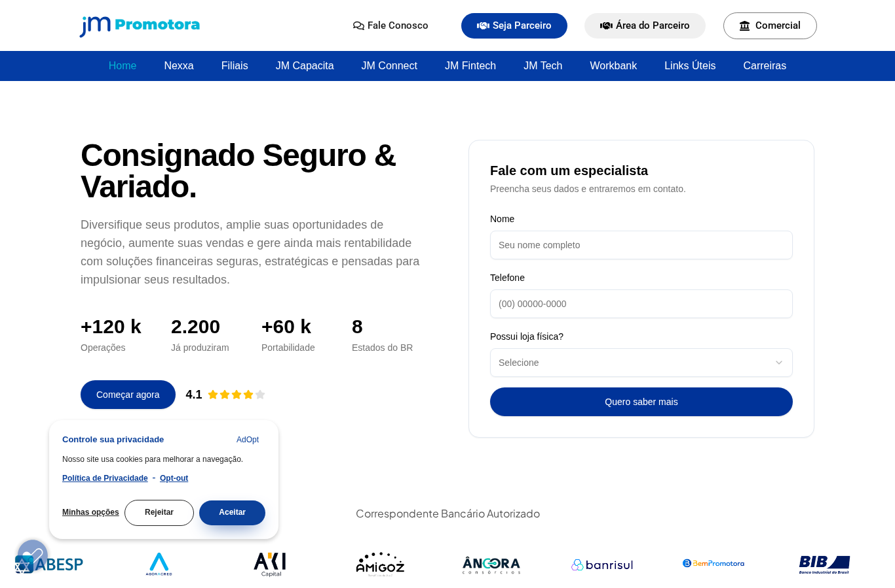

Sistema de Investigação de Marca e Identidade Online
https://jmsedae.com.br/
Prioridade: MEDIUM · Cenário: B_AMBIGUOUS_COMMUNICATION · Revisão humana: PENDING
O estabelecimento opera como correspondente bancário multimarca ('JM Promotora') com identidade visual própria predominante e declaração de correspondente autorizado. No entanto, a ausência de exibição ostensiva do CNPJ e da razão social no rodapé/página de captação, associada à menção de produtos e parceria com o Banco BV sem especificação formal detalhada da relação de correspondência, enquadra a comunicação como ambígua sob a ótica da Resolução CMN nº 4.935/2021, justificando revisão moderada. [Revisor: CONFIRM] A página pertence a uma promotora de vendas/crédito ('JM Promotora') atuando como correspondente bancário multimarcas. Conforme a hipótese e as evidências em E-DISC-001 e E-FOLD, a empresa capta clientes e opera linhas de crédito inclusive vinculadas ao Banco BV, porém omite a razão social formal e o número do CNPJ na página principal/rodapé, além de não detalhar de forma clara e visível o vínculo regulatório e as instituições representadas nos termos da Resolução CMN nº 4.935/2021. A classificação REVIEW_REQUIRED é mantida.

| Ref | Tipo | Local | Conteúdo |
|---|---|---|---|
| E-URL | domain | url | URL final: https://jmsedae.com.br/ (domínio: jmsedae.com.br) |
| E-DISC-001 | text | search_index | Índice de busca (grounding): jmsedae.com.br — **URL:** `https://jmsedae.com.br` | **Produtos com a marca BV:** Financiamento e Refinanciamento de veículos leves/pesados, Empréstimo com Garantia de Veículo e Consignado | **Como utiliza a marca e elementos visuais:** Apresenta o Banco BV com destaque descritivo (*"Referência nacional em financiamento de veículos e crédito pessoal"*) em esteira de captação de crédito veicular e consignado | Apresenta-se como "Correspondente Bancário Autorizado" e cita o Código de Conduta ANEPS, mas o CNPJ e a razão social da matriz não constam de forma ostensiva na página de conversão |
| E-SHOT-VIEWPORT | screenshot | viewport | evidence/C7edadb2d41/attempt-1/viewport.png (sha256 ea4483dbb209cc99…) |
| E-SHOT-FULL | screenshot | page | evidence/C7edadb2d41/attempt-1/fullpage.png (sha256 1b634b00b5489ec8…) |
| E-TITLE | title | head | JM Promotora de Vendas – Consultoria de Crédito Consignado e Pessoal |
| E-CANONICAL | meta | head | https://jmsedae.com.br/ |
| E-HEAD-1 | heading | page | Um Portfólio de Oportunidades |
| E-HEAD-2 | heading | page | Consignado Público |
| E-HEAD-3 | heading | page | Consignado INSS |
| E-HEAD-4 | heading | page | Consignado Federal |
| E-HEAD-5 | heading | page | Crédito CLT |
| E-HEAD-6 | heading | page | FGTS |
| E-HEAD-7 | heading | page | Crédito Veicular |
| E-HEAD-8 | heading | page | Parceria que Cuida |
| E-HEAD-9 | heading | page | Traz Resultados |
| E-HEAD-10 | heading | page | Potencializa Operações |
| E-HEAD-11 | heading | page | Suporte Dedicado |
| E-HEAD-12 | heading | page | Segurança Total |
| E-HEAD-13 | heading | page | Como a nossa parceria faz a sua operação crescer? |
| E-HEAD-14 | heading | page | Há 12 anos a JM Promotora vem realizando sonhos com credibilidade e segurança. |
| E-HEAD-15 | heading | page | Vitrine de Produtos & Parceiros |
| E-HDR | text | header | Vitrine de Produtos & Parceiros Consulte rapidamente quais instituições operam cada modalidade na nossa promotora |
| E-FOLD | text | viewport (acima da dobra) | Fale Conosco Seja Parceiro Área do Parceiro Comercial Home Nexxa Filiais JM Capacita JM Connect JM Fintech JM Tech Workbank Links Úteis Carreiras Correspondente Bancário Autorizado Controle sua privacidade AdOpt Nosso site usa cookies para melhorar a navegação. Política de Privacidade - Opt-out Minhas opções Rejeitar Aceitar |
| E-FTR | text | footer | © Todos direitos reservados. Instagram Facebook-f |
| E-NAV | nav | header | Home <https://jmsedae.com.br/> | Nexxa <https://jmsedae.com.br/nexxa/> | Filiais <https://jmsedae.com.br/filiais-nossa-empresa/> | JM Capacita <https://jmsedae.com.br/capacita/> | JM Connect <https://jmsedae.com.br/jmconnect/> | JM Fintech <https://jmsedae.com.br/jmfintech/> | JM Tech <https://jmsedae.com.br/jmtech/> | Workbank <https://jmpromotora.workbankvirtual.com.br/login.aspx?pdc=true> | Links Úteis <https://jmsedae.com.br/linksuteis/> | Carreiras <https://jmsedae.com.br/carreiras/> | Crédito consignado <https://jmsedae.com.br/credito-consignado/> | Débito em conta corrente <https://jmsedae.com.br/vantagens-debito-conta-corrente-seguranca/> | Consultar CEP <http://www.buscacep.correios.com.br/sistemas/buscacep/default.cfm> | Google Maps <https://www.google.com.br/maps/@-22.1367064,-51.4047249,15z> | Coelba <http://www.coelba.com.br/Pages/Default.aspx> | IBGE <http://munic.ibge.gov.br/index.php?ano=2011> | ANEPS <http://www.aneps.org.br/main.asp?mexec=simpleimpr.asp&tipo=N&idimprensa=1771> | Calculadora Cidadã <https://www3.bcb.gov.br/CALCIDADAO/publico/exibirFormFinanciamentoPrestacoesFixas.do?method=exibirFormFinanciamentoPrestacoesFixas> | PromoBank <https://jmpromotora.promobank.com.br/sistema/> | Meu INSS <https://meu.inss.gov.br/#/login> | Política de Privacidade <https://jmsedae.com.br/politica-de-privacidade/> | Política de Cookies <https://jmsedae.com.br/politica-de-cookies/> | Denúncias <https://jmsedae.com.br/denuncias> | Ouvidoria <https://jmsedae.com.br/cont |
| E-CTA-1 | cta | page | Fale Conosco <https://jmsedae.com.br/#> |
| E-CTA-2 | cta | page | Seja Parceiro <https://jmsedae.com.br/#> |
| E-CTA-3 | cta | page | Área do Parceiro <https://jmsedae.com.br/#> |
| E-CTA-4 | cta | page | Comercial <https://jmsedae.com.br/login/> |
| E-CTA-5 | cta | page | Consignado & Portabilidade |
| E-CTA-6 | cta | page | Crédito, Veículos & FGTS |
| E-CTA-7 | cta | page | Cartões Consignados & Benefício |
| E-CTA-8 | cta | page | Soluções Especiais & Fintechs |
| E-CTA-9 | cta | page | Seja Parceiro |
| E-CTA-10 | cta | page | Imóveis |
| E-CTA-11 | cta | page | Veículos |
| E-CTA-12 | cta | page | Serviços |
| E-CTA-13 | cta | page | Motos |
| E-CTA-14 | cta | page | Minhas opções |
| E-CTA-15 | cta | page | Rejeitar |
| E-CTA-16 | cta | page | Aceitar |
| E-CONTACT-1 | contact | footer | Instagram <https://www.instagram.com/jmpromotoradevendas/> |
| E-CONTACT-2 | contact | footer | Facebook-f <https://www.facebook.com/jmsedae/> |
| E-IMG-1 | image | page | imagem alt='Banco Pan' src=https://jmsedae.com.br/wp-content/uploads/2026/05/banco-pan-logo-2-1.png (89x42, abaixo da dobra) |
| E-IMG-2 | image | page | imagem alt='Facta' src=https://jmsedae.com.br/wp-content/uploads/2026/05/LOGO-FACTA.png (119x42, abaixo da dobra) |
| E-IMG-3 | image | page | imagem alt='' src=https://jmsedae.com.br/wp-content/uploads/2021/07/Logo-correspondente-bancario.png (210x42, abaixo da dobra) |
| E-IMG-4 | image | page | imagem alt='' src=https://jmsedae.com.br/wp-content/uploads/2021/07/Logo-correspondente-bancario.png (185x37, abaixo da dobra) |
| E-TXT-001 | text | page | Seja Parceiro |
| E-TXT-002 | text | page | Área do Parceiro |
| E-TXT-003 | text | page | Correspondente Bancário Autorizado |
| E-TXT-004 | text | page | Parceiros estratégicos para garantir flexibilidade e alta aprovação. |
| E-TXT-005 | text | page | Cuidamos dos nossos parceiros oferecendo suporte contínuo, produtos diversificados e as melhores condições para rentabilizar o seu negócio. |
| E-TXT-006 | text | page | Vitrine de Produtos & Parceiros |
| E-TXT-007 | text | page | Banco BMG |
| E-TXT-008 | text | page | Banco Pan |
| E-TXT-009 | text | page | Banco do Brasil |
| E-TXT-010 | text | page | Banco BRB |
| E-TXT-011 | text | page | Banco Safra |
| E-TXT-012 | text | page | Infraestrutura completa para o seu banco digital. |
| E-TXT-013 | text | page | Transferência do empréstimo de outro banco para reduzir parcelas ou liberar troco para o cliente. |
| E-TXT-014 | text | page | Seja Parceiro |
| E-TXT-015 | text | page | Descubra como os parceiros JM estão aumentando o faturamento mensal com uma das modalidades mais rentáveis do mercado. |
| E-TXT-016 | text | page | Acompanhamento do primeiro atendimento ao fechamento. |
| E-TXT-017 | text | page | Diretrizes operacionais para correspondentes bancários trabalharem com alta performance e ética. |
| E-TXT-018 | text | page | Atendimento |
| E-TXT-019 | text | page | |
| E-TXT-020 | text | page | Consultar CEP |
| E-TXT-021 | text | page | Ouvidoria |
| E-TXT-022 | text | page | Rua da Alfazema, 761, Edf. Iguatemi Business Flat, Loja 19, Caminho das Árvores Salvador/BA CEP 41.820-710 |
| Dimensão | Sinal | Achado | Refs |
|---|---|---|---|
| VISUAL_IDENTITY | LEGITIMATE | Predomínio total da identidade visual própria da promotora ('JM Promotora') com logotipo próprio, paleta azul/ciano e layout institucional independente. | E-SHOT-VIEWPORT E-SHOT-FULL E-TITLE |
| DECLARED_COMMERCIAL_IDENTITY | CONFUSION | O portal se apresenta comercialmente como 'JM Promotora de Vendas', mas não exibe o CNPJ nem a razão social formalmente registrada no rodapé. | E-TITLE E-FTR E-DISC-001 |
| CORRESPONDENT_TRANSPARENCY | CONFUSION | Embora declare ser 'Correspondente Bancário Autorizado' e cite a ANEPS, há carência de dados cadastrais ostensivos (CNPJ) e discriminação formal dos bancos contratantes na interface. | E-TXT-003 E-DISC-001 E-NAV |
| INSTITUTIONAL_LANGUAGE | NEUTRAL | Comunicação voltada à captação de parceiros e clientes no modelo B2B e B2C de correspondente bancário multimarca, sem mimetizar canais oficiais do Banco BV. | E-HEAD-8 E-HEAD-13 E-TXT-005 |
| LOGO_USAGE | NEUTRAL | Contexto estritamente multimarca/multibancos (Banco BMG, Banco Pan, Daycoval, Banco do Brasil, Banco Safra, entre outros), sem destaque desproporcional ou overbranding da marca BV. | E-TXT-007 E-TXT-008 E-TXT-009 E-TXT-011 E-SHOT-FULL |
| SERVICE_JOURNEY | NEUTRAL | Formulário de captação e consultoria para intermediação de crédito consignado, financiamento de veículos e consórcios operados pela própria promotora. | E-SHOT-VIEWPORT E-HEAD-1 |
| CONTACT_CHANNELS | LEGITIMATE | Canais de contato próprios da JM Promotora informados (telefone 71 3011-5771, redes sociais e endereço físico em Salvador/BA). | E-TXT-022 E-CONTACT-1 E-CONTACT-2 |
| CONSUMER_CONFUSION | NEUTRAL | Baixo risco de confusão direta de identidade corporativa quanto a se passar pelo banco, restando apenas a ambiguidade cadastral típica de correspondentes não totalmente identificados. | E-SHOT-FULL E-TITLE |
O estabelecimento opera como correspondente bancário multimarca ('JM Promotora') com identidade visual própria predominante e declaração de correspondente autorizado. No entanto, a ausência de exibição ostensiva do CNPJ e da razão social no rodapé/página de captação, associada à menção de produtos e parceria com o Banco BV sem especificação formal detalhada da relação de correspondência, enquadra a comunicação como ambígua sob a ótica da Resolução CMN nº 4.935/2021, justificando revisão moderada.
Há declaração de correspondente ou de parceria, sem identificação suficiente ou sem confirmação cadastral.
| Tipo | Valor | Ref | Contexto |
|---|---|---|---|
| domain | jmsedae.com.br | E-URL | |
| social_profile | https://www.instagram.com/jmpromotoradevendas/ | E-CONTACT-1 | |
| social_profile | https://www.facebook.com/jmsedae/ | E-CONTACT-2 | |
| correspondent_declaration | Correspondente Bancário Autorizado | E-FOLD | Fale Conosco Seja Parceiro Área do Parceiro Comercial Home Nexxa Filiais JM Capacita JM Connect JM Fintech JM Tech Workbank Links Úteis Carreiras Correspondente Bancário Autorizado Controle sua privac |
Mapeamento indicativo para apoio à auditoria. Não constitui conclusão regulatória; a decisão definitiva pertence à auditoria.
Fonte: NORMATIVE
Art. 14. O contrato de correspondente deve estabelecer: [...] II - vedação à utilização, pelo contratado, de logomarca ou de outros atributos que sejam similares aos adotados pela instituição contratante em suas agências, postos de atendimento, sítio eletrônico na internet, aplicativo ou outras plataformas de comunicação em rede;
Hipótese: Uso de logomarca, uso excessivo/desproporcional ou de atributos similares aos adotados pela contratante em seus canais. Aplicável somente se confirmado o vínculo de correspondente.
Evidência observada: E-DISC-001 E-HDR E-HEAD-15
Informação faltante:
Fonte: NORMATIVE
Art. 14. O contrato de correspondente deve estabelecer: [...] III - divulgação ao público, pelo contratado, de sua condição de prestador de serviços à instituição contratante, identificada pelo nome com que é conhecida no mercado, com descrição dos produtos e serviços oferecidos e canais de contato da instituição contratante, inclusive de sua ouvidoria, em local visível, em destaque e em formato legível, por meio de: a) sítio eletrônico do correspondente na internet, acessível na página inicial; b) aplicativo e outras plataformas de comunicação em rede do correspondente; [...]
Hipótese: Há declaração da condição de correspondente/prestador, mas outros elementos da página (DECLARED_COMMERCIAL_IDENTITY) podem contradizê-la ou reduzir seu efeito (destaque, legibilidade e identificação da contratante a verificar). Aplicável somente se confirmado o vínculo de correspondente.
Evidência observada: E-DISC-001 E-FOLD E-FTR E-NAV E-TITLE E-TXT-003 E-TXT-022
Informação faltante:
Fonte: NORMATIVE
Art. 3º O correspondente atua por conta e sob as diretrizes da instituição contratante, que assume inteira responsabilidade pelo atendimento prestado aos clientes e usuários por meio do contratado.
Evidência observada: E-CONTACT-1 E-CONTACT-2 E-TXT-022
Limitações: requisitos contratuais/internos não fornecidos: mapeamento limitado ao texto normativo
Decisão: CONFIRM → REVIEW_REQUIRED / MEDIUM
A página pertence a uma promotora de vendas/crédito ('JM Promotora') atuando como correspondente bancário multimarcas. Conforme a hipótese e as evidências em E-DISC-001 e E-FOLD, a empresa capta clientes e opera linhas de crédito inclusive vinculadas ao Banco BV, porém omite a razão social formal e o número do CNPJ na página principal/rodapé, além de não detalhar de forma clara e visível o vínculo regulatório e as instituições representadas nos termos da Resolução CMN nº 4.935/2021. A classificação REVIEW_REQUIRED é mantida.
| Tema | Severidade | Questionamento | Refs |
|---|---|---|---|
| contradictory_evidence | LOW | Coexistem declaração de correspondente e indícios de confusão. | E-FOLD E-TXT-003 |
| Fonte | Consulta / hipótese | URL original | Título / trecho |
|---|---|---|---|
| grounding | Objetivo: Promotoras, correspondentes e corretoras oferecendo refinanciamento, crédito consignado, empréstimo pessoal e garantia com a marca.
Execute no Google Search as seguintes consultas (dorks):
- "Banco BV" ("crédito com garantia" OR "home equity" OR refinanciamento) (correspondente OR promotora OR financeira) -site:bv.com.br -site:bancobv.com.br -site:bvfinanceira.com.br -site:bvinvestimentos.com.br -site:napista.com.br -site:bvopen.com.br -site:meufinanciamentosolar.com.br -site:votorantim.com.br -site:vam.com.br -site:reclameaqui.com.br -site:jusbrasil.com.br -site:jus.br
- ("bv financeira" OR "Banco BV") ("crédito consignado" OR "empréstimo consignado" OR consignado) (promotora OR correspondente OR "taxas" OR simulação) -site:bv.com.br -site:bancobv.com.br -site:bvfinanceira.com.br -site:bvinvestimentos.com.br -site:napista.com.br -site:bvopen.com.br -site:meufinanciamentosolar.com.br -site:votorantim.com.br -site:vam.com.br -site:reclameaqui.com.br -site:jusbrasil.com.br -site:jus.br
- ("BV Financeira" OR "Banco BV") ("Daycoval" OR "Pan" OR "Safra" OR "BMG") (consignado OR refinanciamento OR empréstimo OR promotora) -site:bv.com.br -site:bancobv.com.br -site:bvfinanceira.com.br -site:bvinvestimentos.com.br -site:napista.com.br -site:bvopen.com.br -site:meufinanciamentosolar.com.br -site:votorantim.com.br -site:vam.com.br -site:reclameaqui.com.br -site:jusbrasil.com.br -site:jus.br
Liste de forma abrangente as páginas públicas encontradas (até 12 resultados distintos), informando para cada uma o nome do estabelecimento/perfil, a URL e como a marca é utilizada (destaque visual, título, feirão, simulador, redes sociais e se há ou não identificação clara de CNPJ e condição de correspondente bancário). H2-product:refinanciamento e crédito com garantia | https://jmsedae.com.br/ | jmsedae.com.br **URL:** `https://jmsedae.com.br` | **Produtos com a marca BV:** Financiamento e Refinanciamento de veículos leves/pesados, Empréstimo com Garantia de Veículo e Consignado | **Como utiliza a marca e elementos visuais:** Apresenta o Banco BV com destaque descritivo (*"Referência nacional em financiamento de veículos e crédito pessoal"*) em esteira de captação de crédito veicular e consignado | Apresenta-se como "Correspondente Bancário Autorizado" e cita o Código de Conduta ANEPS, mas o CNPJ e a razão social da matriz não constam de forma ostensiva na página de conversão |
Original: https://jmsedae.com.br/
Final: https://jmsedae.com.br/
| Artefato | Caminho | SHA-256 | Bytes |
|---|---|---|---|
| screenshot_viewport | evidence/C7edadb2d41/attempt-1/viewport.png | ea4483dbb209cc99fb1540fdea5a1e3d7033691341d98f656bc0213a5cb7baf3 | 132532 |
| screenshot_full | evidence/C7edadb2d41/attempt-1/fullpage.png | 1b634b00b5489ec866a227c068f614bb9d670adce8b24edc91e6845f28de4095 | 905532 |
| html | evidence/C7edadb2d41/attempt-1/page.html.txt | 6534e7c1bd2a21236af8ed7d184aec89beffed8665c795b6d10ed501fa6f9de3 | 1009217 |
| text | evidence/C7edadb2d41/attempt-1/text.txt | 7495ffdb53e835f929210e0675cbcd6f62e8b02fa38dd25a916a7860634f07c6 | 9691 |
| page_data | evidence/C7edadb2d41/attempt-1/page.json | 7a9a1f02b978a46cbe67b53b7edf4cc1b6546a5d6d7e7cbb5eac21133c81a5dd | 39615 |
| Quando | De | Para | Nota |
|---|---|---|---|
| 2026-11-25T18:12:03+00:00 | DISCOVERED | QUEUED | prioritised (score 3.0) |
| 2026-11-25T18:23:30+00:00 | QUEUED | COLLECTING | |
| 2026-11-25T18:23:41+00:00 | COLLECTING | COLLECTED | |
| 2026-11-25T18:23:41+00:00 | COLLECTED | ANALYZING | |
| 2026-11-25T18:24:06+00:00 | ANALYZING | REVIEWING | |
| 2026-11-25T18:24:30+00:00 | REVIEWING | COMPLETED |